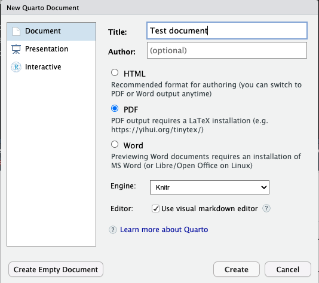

tinytex::install_tinytex()
tinytex:::install_yihui_pkgs()Quartaki
— 6 hour introduction to Quarto —
Athanasia Monika Mowinckel ![]()
There are increasing demands on scientific staff in preparing reports for governmental and public dissemination, as well as scientific dissemination. Creating reports is a time-consuming task, as it often requires switching between programs for writing, doing analyses and creating tables and figures, as well as other graphical and textual programs. Learning efficient tools in combining programming and report generation are becoming increasingly important to alleviate the manual and burdensome process of switching programs. Quarto is a second generation report framework based on the popular markdown plain text format. Combining writing in markdown with the ability to run code to format, analyse, and visualise data, all in the same place, creates a seamless environment for the researchers to produce reports. While this workshop will focus on using Quarto with R, it also has native abilities to interact with python, observable.js and Julia, without needing R installed. This makes Quarto a great tool to learn, no matter which language you focus on.
Aims
Understand the basics of markdown
Ability to generate html & pdf reports, and presentations
Ability to cross-reference report content and add citations
Be able to use Academic Journal templates
Schedule
Elements of a qmd ( ~ 45 minutes)
Making our first html report ( ~ 45 minutes)
Citations & cross-references ( ~ 45 minutes)
Lunch ( ~ 60 minutes)
Making our first pdf report (~ 45 minutes)
Making our first presentation ( ~ 45 minutes)
Preparations
This introductory workshop to Quarto is being instructed using R and RStudio. It would be easiest for learners to follow along, and the instructor to help you , if you also use this set-up.
Install instructions can be found on the Quarto webpages.
Install summary
install/update Quarto CLI
install/update R
install/update RStudio
A new version of RStudio and R is recommended. Quarto is in rapid development, please make sure your RStudio is the newest version available (which will also install newest Quarto) to be able to follow along the workshop. Even if you have R, RStudio and Quarto installed on your system, you should update all three before the workshop.
Using another setup
You may choose to use vscode or another IDE, or even to do python in stead of R. However, know that the instructor will be less available to help using these tools, and code examples will need to be thought of by the learners them selves. Some examples on using other set-ups than R and RStudio can be found on the Quarto webpages.
R packages
In addition to Quarto, a series of R packages will also be needed to show-case the ways we can use Quarto to generate reports.
# Run in R
install.packages(c(
"tinytex", # for pdf rendering
"rmarkdown", # rendering everything
"tidyverse", # data-wrangling
"knitr", # table printing
"kableExtra", # pretty table printing
"palmerpenguins" # dataset
))Tinytex
When creating PDFs from Quarto, we need to have LaTeX installed for that conversion to happen. We will use the tinytex package to get a light-weight latex distribution installed on your computer.
Open RStudio, and find the section called “Console”.
Non-R participants
If you are joining the course using another language than R, you will need to install tinytex in another way. Open your terminal application and run the following command
quarto install tinytex
Tinytex install issues
If you are struggling to get tinytex installed via RStudio, or because your work administers your computer and you need IT help to get things installed, we have additional resources for you.
Yihui, the creator of tinytex, has a great post about installing tinytex. It is somewhat on the technical side, so it is great for pointing your IT department to for help in installing.
If you find these instructions too technical, please contact me as indicated at the bottom of this section.
Check the install
The best way to confirm that everything is installed correctly, is to create a test quarto document. In RStudio, go to File -> New file -> Quarto document

Fill in the title, and choose to create a PDF document (this will also verify tinytex installation is successful). Click on Create.
RStudio should open a document for you, which is the test document you will render. Don’t think about the content just now, but find the Render button at the top of the document. Click it and you should see some action in a new tab called “Background jobs”. It will call on latex and maybe install some latex packages to create your document. If it is successful, the RStudio Viewer window should come into focus and you will see a preview of a PDF document with the title “Test document”. This means everything went fine and you are ready!
Troubleshooting
If the PDF generation fails with a message containing:
{! LaTeX Error: File `pdfcol.sty' not found.}
This is an extra LaTeX package we will need to get installed. To do that, open RStudio and locate a tab called “Terminal”. Run the following command:
tlmgr install pdfcol
I can’t see the terminal!
If the terminal is not visible next to the console, you need to enable it. Go to Tools -> Terminal -> Move focus to Terminal and it should pop up.
On macOS or Linux, you may also do this in the Terminal application directly (rather than through RStudio).
If you still have problems getting things installed, please contact me on email or through a GitHub issue, and I will try help you get sorted.
When everything else fails
If you cannot get Quarto installed correctly or get a pdf to be generated, we will unfortunately need to resort to using Posit Cloud so you can follow along.
The downside to this is that you will not have Quarto ready to use on your own system, and will thus need help to get that working later.